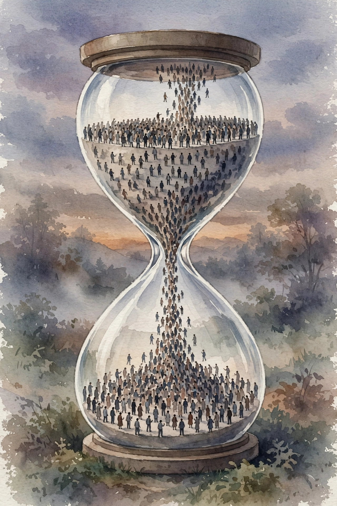

You Are Not So Smart · Episode 211 · Interactive Companion
QAnon and Conspiratorial Narratives
Joseph Uscinski and Annie Sternisko on conspiratorial thinking. Stop cataloging the beliefs. Study the believers, the motives that select the theory, and the measured truth underneath the media mirage.
← Track index · Episode chapter →

Illustration. Watercolor-style image generated for this page. Tiny figures pour through an hourglass neck. Not a photograph.
The Wisdom Index: every nugget in this companion
Part 1
The Redirect: Believers, Not Beliefs
SOURCEUscinski's complaint: public discussion fixates on the conspiracy theory's content, the catalog of claims, the supposed evidence. That focus puts the spotlight on the theory and takes it off the believer. But the content is, in his phrase, “the least interesting and least informative thing” about conspiratorial thinking. The psychology runs the same under flat earth, moon hoaxes, and QAnon. Study the psychology and you understand all of them. Study the claims and you understand none.
SOURCESternisko prefers the term conspiracy narrative over conspiracy theory. A theory suggests evidence and falsifiability. A narrative is cherry picked, usually unfalsifiable, and absorbs counterevidence by integrating it. Choosing a conspiracy resembles choosing a film.
SOURCEUscinski's instrument is three statements, each rated 1 to 7: much of our lives runs on plots hatched in secret places. Even in a democracy, only a few people run things anyway. The people who really run the country stay unknown to the voters. Most people score in the middle: not committed, but prone under the right conditions. A small part of every population scores high on all three. They exist in every town, institution, and neighborhood.
SOURCEMcRaney's analogy: before the internet, a Dungeons and Dragons fan in a small town might never find enough players. After the internet, finding your people became the default. High scorers can now find each other, gather where everyone strongly agrees, and form communities around the shared inclination, whatever the specific beliefs turn out to be.
INTERPRETATIONThe instrument is portable. Score yourself honestly, 1 to 7, on the three statements. Then write which conditions would push your scores up. Those conditions are your vulnerability map.
Nugget
Believers, not beliefs
What happened. SOURCEThe episode redirects from the claims to the psychology. The content is the least informative part.
Why it matters. INTERPRETATIONTheories are interchangeable. Half of JFK conspiracy believers cannot name the conspirator. The inclination is the constant.
The principle. INTERPRETATIONMeasure the inclination with the three questions. Argue the claims and you fight the symptom.
Part 2
The Hourglass
SOURCESternisko's model pictures the process as an hourglass. The fat top holds everything a person brings: attitudes, beliefs, values, anxieties, the whole profile from nature and nurture. The bottleneck is one conspiracy theory. The fat bottom is what comes out the other side: new beliefs, attitudes, and values absorbed from inside the conspiracy, which become markers of the new group identity.
SOURCEThe fandom analogy: someone inclined toward spaceship movies might land on Alien or Star Wars and join that fandom. Once inside, they pick up the shared attitudes, costumes, and lore. A different person might enter through horror and land on Alien or The Exorcist. Same destination, different doors. Inside, everyone starts sharing things they did not share before.
SOURCESternisko splits every conspiracy's appeal into content and quality, like films split into plot and genre. The content is the narrative. The quality is what being a fan signals. Two motives select among theories. The social identity motive draws people to the content: the theory makes your group look good and the other group look bad. The uniqueness motive draws people to the quality: the theory is contrarian, a way to feel special, not a sheep. Under both sit three base motives: feeling good about yourself and your groups, making sense of the environment, and feeling safe and in control.
INTERPRETATIONThe diagnostic for the reader: ask what they defend when challenged, the specific claims or their specialness for seeing through it all. The defense reveals the motive. Then ask the same of one belief you hold strongly.
Nugget
The hourglass
What happened. SOURCEMany doors in, one identity out. Entry reasons differ. The exit identity converges.
Why it matters. INTERPRETATIONThe motive predicts the theory. Beliefs follow motives, not evidence.
The principle. INTERPRETATIONMap any community through the hourglass, including your own. The funnel worked on you too.
Part 3
Why the Machine Resists Debunking
SOURCETwo features make conspiracy narratives nearly debunk proof. One is the conspiratorial logic loop: counterevidence gets reinterpreted as part of the cover up, which makes it evidence for the conspiracy. Missing evidence gets the same treatment: the absence of proof is proof of how deep the cover up goes. Every input becomes support. No possible input can weaken it.
SOURCEThe other is the absence of peer review. Dozens of internal contradictions coexist because no mechanism rewards consistency. There is a standing assumption that the real evidence sits behind a curtain, so there is always more work to do, and the work never converges.
SOURCEThe episode grounds the loop in normal psychology. Crisis researcher Kate Starbird's information voids: when people sense missing information that could matter, they are compelled to fill the void. Under high uncertainty plus high anxiety, groups do collective sensemaking, trading rumors and converging on a workable reality. That machinery saves lives in a flood. Fed with rumors, it manufactures shared delusion with the same machinery.
INTERPRETATIONThe channel rule for the reader: before you debunk anyone, check whether you are a trusted source to them. If not, your debunking feeds the loop. Find a trusted channel or stand down.
Nugget
The logic loop
What happened. SOURCECounterevidence becomes cover up. Missing evidence becomes hidden proof. Every input supports the theory.
Why it matters. INTERPRETATIONDebunking through a distrusted channel is absorbed as more cover up. The correction recruits for the loop.
The principle. INTERPRETATIONChoose the channel before the correction. Trusted source or silence.
Part 4
QAnon, Measured
SOURCEUscinski's research delivers three corrections to the media picture. One: QAnon is not growing. His feeling thermometer polling in Florida scored QAnon at 24 out of 100 in 2018, two points above Fidel Castro at 22, in a state where that is no endorsement. National follow ups showed no increase. Other polls put believers at 5 to 7 percent at most, on par with the fringiest theories polled.
SOURCETwo: it is not a far right conspiracy. Partisanship and ideology drop out of the models. The predictors that survive are conspiratorial thinking, the dark triad personality traits (narcissism, Machiavellianism, psychopathy), and deep antipathy toward political institutions. Supporters liked Trump as an anti establishment outsider, not for conservative ideology.
SOURCEThree: it is not big. Online magnitude is not real magnitude. The hashtag matched a major social movement in volume while changing nothing in society. Rallies drew 40 to 50 people. A big Washington rally was dozens in person. Tweets are not believers.
The media picture versus the measured reality
Hover any bar for detail. Visibility is not growth.
Source: Uscinski research via the ep211 interviews. Original toy chart built from episode claims. Scales differ per bar. Each bar carries its own unit in the tooltip.
SOURCEMcRaney's numbers on harm, from the Center for Strategic and International Studies: 22 violent incidents tied to QAnon believers in three years, none classified as terrorism, 3 fatal. In the same three years, far right extremists not tied to QAnon committed 139 violent acts, religious attackers 34, far left attackers 37. The FBI's 2019 bulletin classified QAnon as a potential domestic terrorism threat while noting most believers never act. The threat is real and, in the comparative data, small.
Three years of violent incidents, by category
Hover any bar for detail. Comparative data from the Center for Strategic and International Studies, via the episode.
Source: CSIS data via the ep211 interviews. Original toy chart built from episode claims.
SOURCEUscinski's summary image: QAnon is a bar. A certain kind of person likes hanging out there. If a ruckus breaks out, it is a mistake to say the bar made them crazy. The people were already like that. The bar collected them. The beliefs predated QAnon by centuries. Blaming the bar mistakes selection for causation.
SOURCEIf the numbers are small, why does it feel enormous? Attention, not growth. His Google alert for conspiracy theory went from about 5 articles a day a decade ago to 50 to 100 a day. The New York Times went from about 50 conspiracy theory articles in a year to 750 in 2020. Belief levels, tracked across historical surveys, show no increase. And the genuinely new thing is speed. The internet lowered the barriers to community formation, so anything can gather faster. The beliefs are old. The assembly line is new.
Coverage is not neutral. It recruits.
Uscinski's media advice, in the episode
SOURCESternisko's prescription: empathetic dialogue, not contempt. Ridiculing the cranky uncle severs another real world tie and pushes him deeper into the community that welcomes him. Hear the person out while disagreeing completely. She admits this is brutally hard in practice and sometimes unrealistic. It is still the only individual level move the research supports.
INTERPRETATIONBefore reacting to any scary trend story, demand the three numbers: how many believers, growing or flat, online or in person. The mirage runs on visibility. The numbers dissolve it.
Nugget
The bar
What happened. SOURCEQAnon collects the already convinced. It invented nothing. Closing one bar moves the regulars to another.
Why it matters. INTERPRETATIONSelection, not causation. The fix is on the demand side: belonging supplied elsewhere, coverage that informs without advertising.
The principle. INTERPRETATIONStarve the demand. Keep the tie. Correct only through trusted channels.